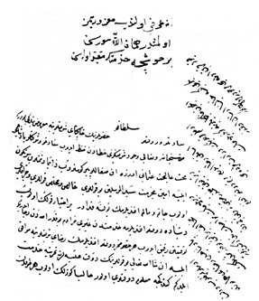

Belge 5: TKSA E.2457/14, veziriâzam ‘arzı
Belge 5
Özet:
Sadakatini inandırmak çabasında. “Bir ihtiyar kulun olup dünyada devletlü efendüme hidmetten gayrı murâdım yokdur... Hâliyâ güzellik olub.”
Mevâcibi tedârike çalışıyoruz.
Oğluma vezâret “müjdesi içün hâkipaylarına gönderilecek yirmi kîse hâliyâ irsâl olunmuşdur”.
H. H. Vâlide Turhan Sultan’ın emri:
“... bir hoşça hidmetine mukayyed olasın.”
Yorum:
‘Arz, ihtiyar vezir Boynu-Yaralı Mehmed Paşa (veziriâzamlığı 26 Nisan 1656–15 Eylül 1656) oğlunun vezirliği için armağan (rüşvet) 20 kîse (2 milyon akça) göndermiş.